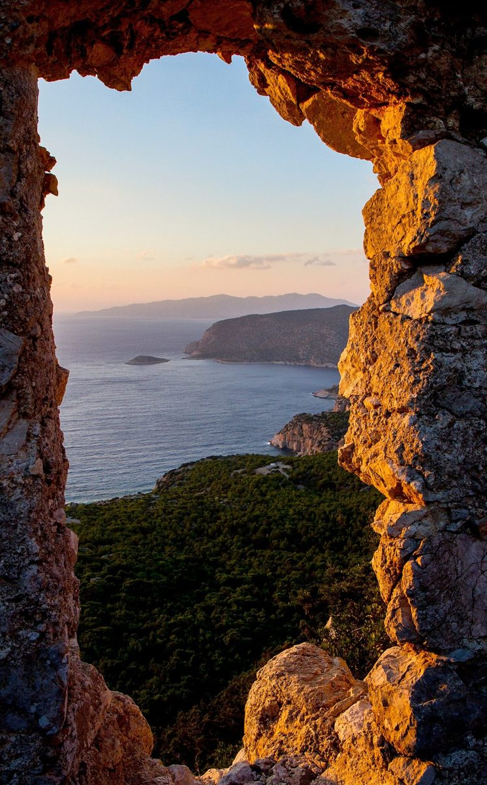
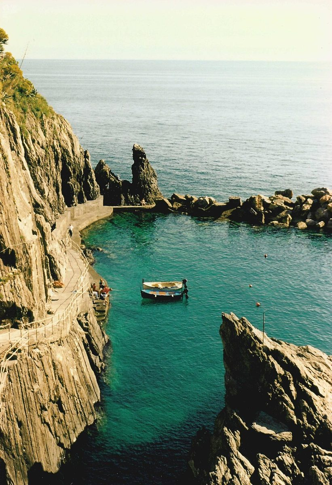
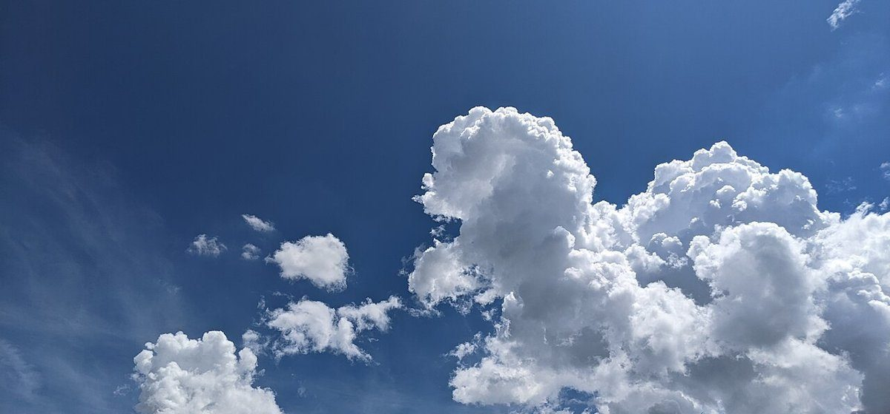

店のこと
店のこと
お店について確認できているのは、所在地とInstagramのアカウントだけです。
「想像してみる」部分は制作側の想像です。お店の実際の様子・考え・メニューとは関係がありません。
確認できていること
- 店名は「喫茶うみかぜ」、業種は喫茶(カフェ)
- 所在地は長崎県五島市浜町546-2
- 電話番号はなし。連絡はInstagramから
- 営業時間・定休日・メニュー・価格・ご予約・駐車場は準備中

想像してみる
名前から、遊んでみる
由来は分かりません。制作側は「うみかぜ」という響きから、海と風という二つの言葉の組み合わせを思い浮かべ、そこから信号旗の絵柄を連想しました。お店の姿を描いたものではなく、ページを飾るための連想です。


